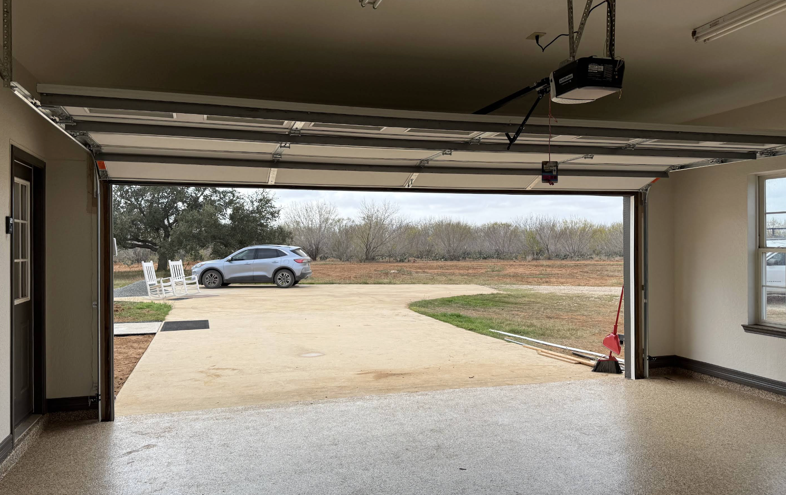
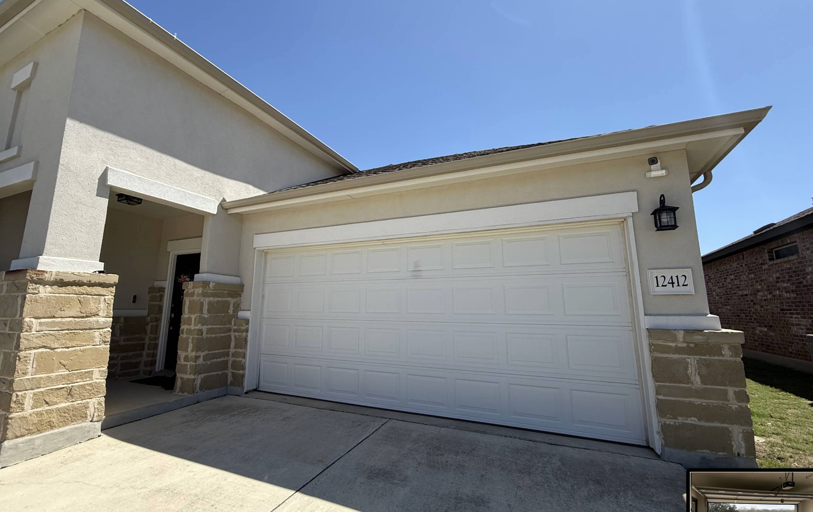
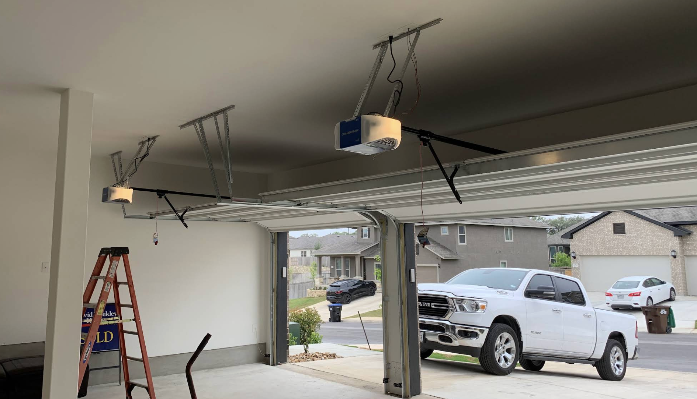
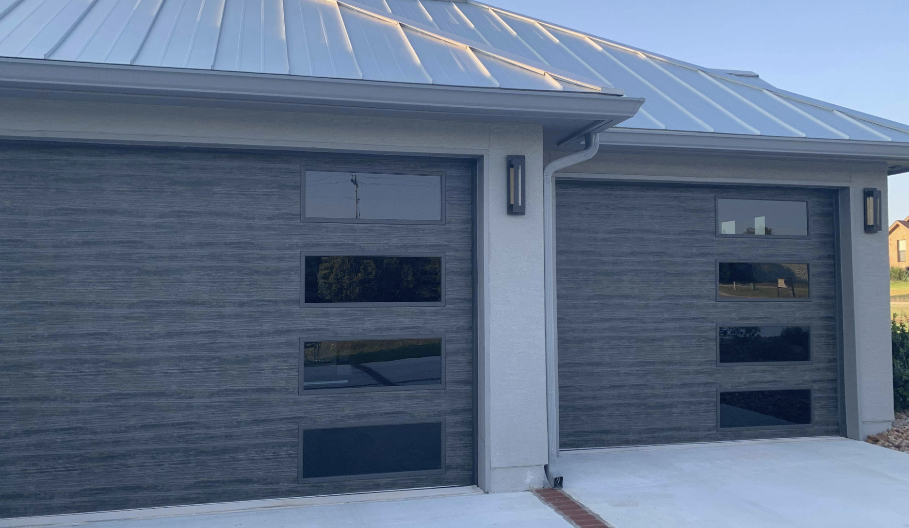
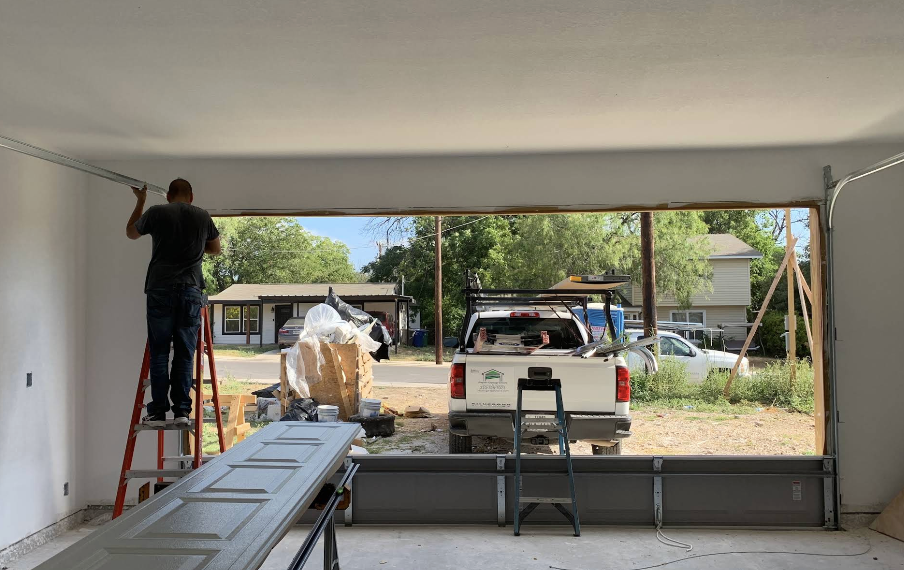
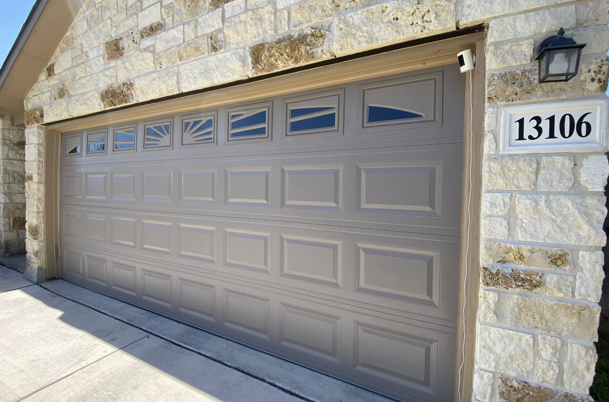
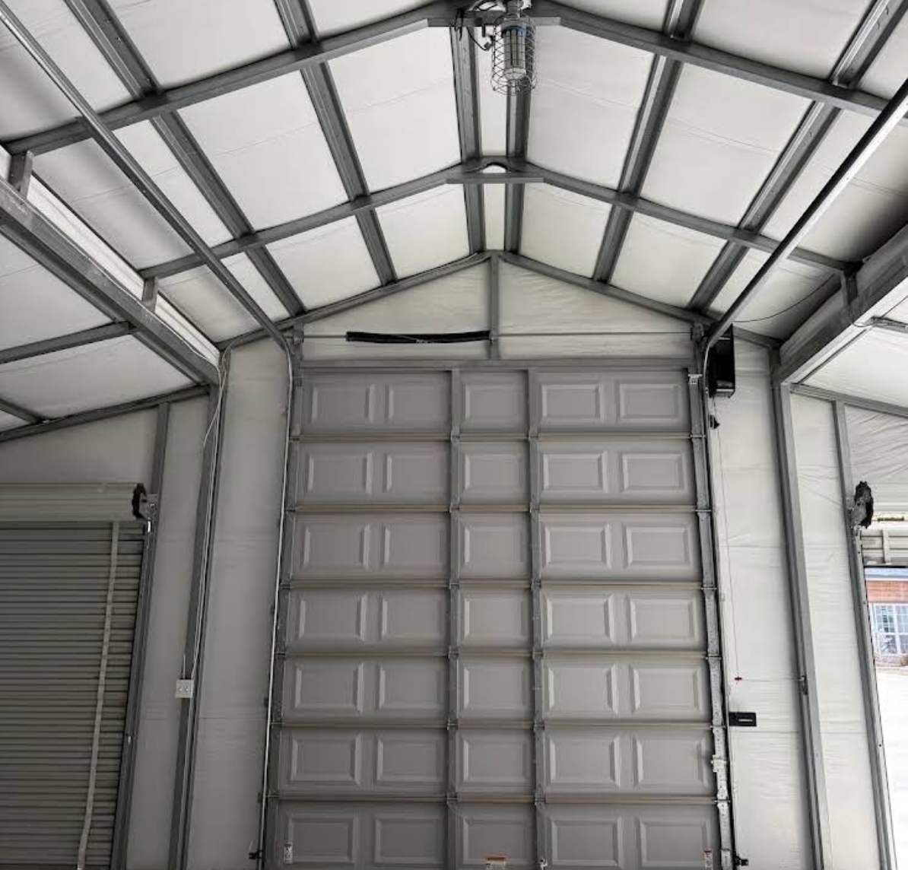
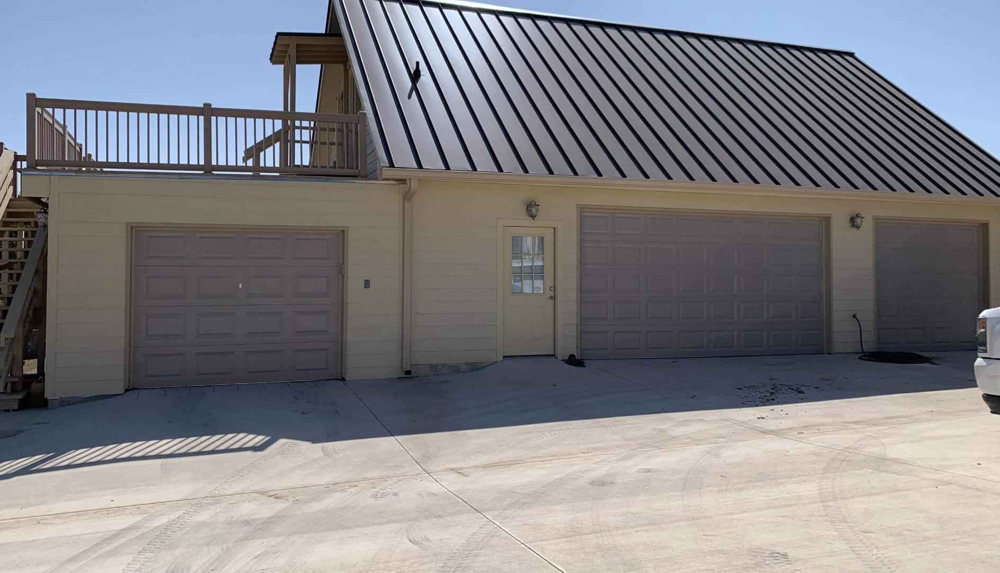
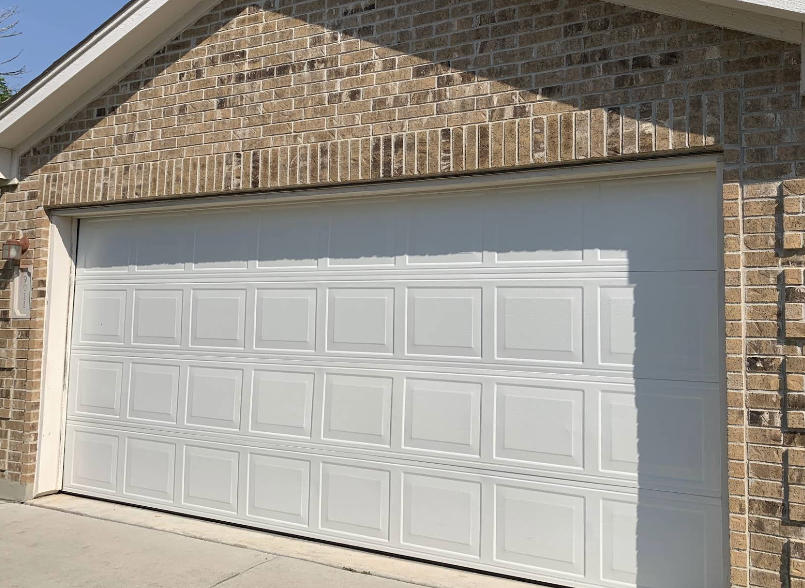

Guías de precios, reparaciones y mantenimiento escritas por los técnicos de iRepair Garage Doors — el negocio más reseñado de San Antonio.

Pricing GuideEl resorte roto es la causa #1 de puertas atascadas. Te explicamos exactamente cuánto cobran los técnicos en San Antonio y qué factores afectan el precio.

Troubleshooting¿Tu puerta de garage no responde? Antes de llamar a un técnico, revisa estas 7 causas comunes. Algunas las puedes resolver en minutos tú mismo.

Buying GuideComparamos las tres marcas más populares de motores de garage para que puedas elegir el correcto según tu presupuesto y necesidades.

Home Tips¿Tu puerta tiene más de 15 años? Estas son las señales claras de que una reparación ya no es suficiente y necesitas una puerta nueva.

TroubleshootingUn chirrido, traqueteo o golpe fuerte tiene una causa específica. Identifica el sonido y descubre si puedes arreglarlo tú mismo o necesitas un técnico.

MaintenanceLos resortes estándar duran unos 10,000 ciclos. Pero hay factores clave que los hacen durar más o mucho menos. Aquí te explicamos todo.

SafetyVideos de YouTube hacen que parezca fácil, pero cada año hay cientos de lesiones graves por resortes de garage. Lee esto antes de intentarlo.
Los precios de instalación de opener varían mucho. Te desglosamos exactamente qué incluye un servicio profesional y cuánto deberías pagar.

CommercialUn negocio no puede darse el lujo de tener la puerta atascada. Conoce los tipos de puertas comerciales que servimos y cuánto tarda una reparación.

Maintenance5 minutos de mantenimiento al mes pueden ahorrar cientos de dólares en reparaciones. Aquí está el checklist exacto que usamos nuestros técnicos.